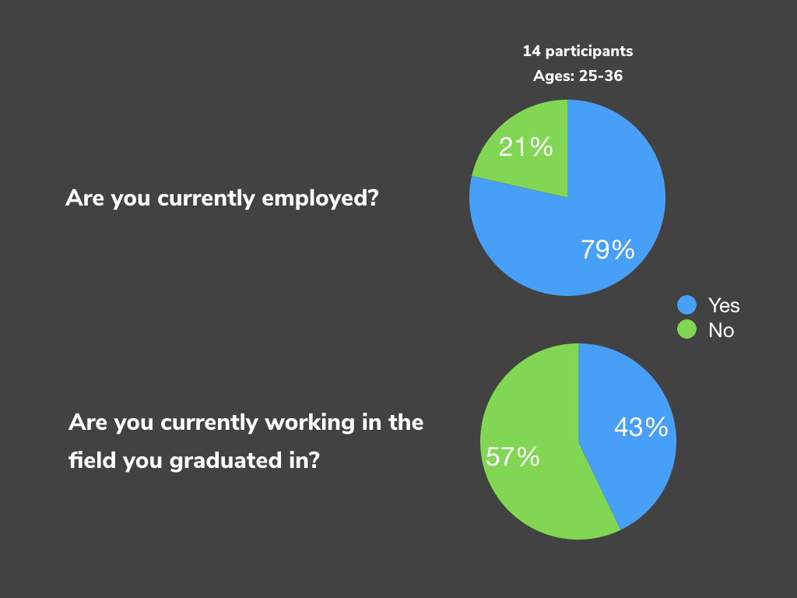
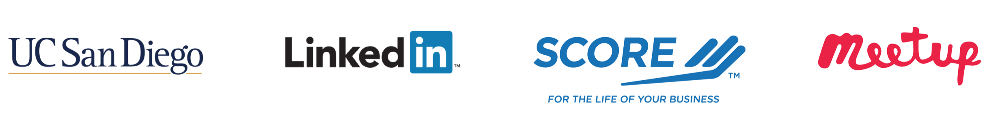
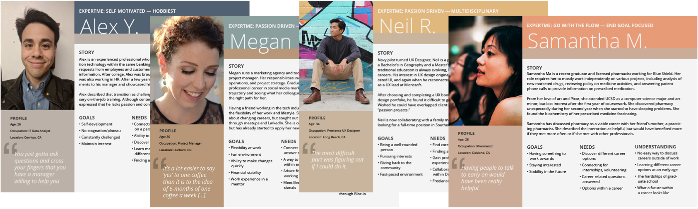
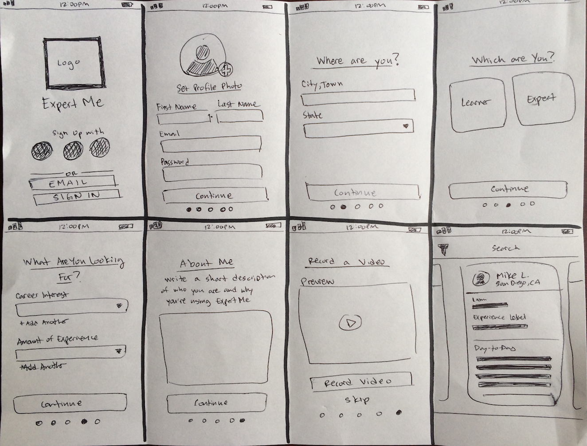

Young curiosity. Professional wisdom. Humanist connectivity.
ExpertMe is an iOS meetup application focused on humanizing the process of choosing a career. With integrated filtering and messaging, ExpertMe connects curious individuals with working professionals by emphasizing 1-on-1 interactions and simplifying the transfer of industry knowledge.
Problem
In America, the expectation to choose a career early in life is an overwhelming and stressful time for many young students. Currently, there are not many options for career advice or industry insights that take advantage of new technology while emphasizing in-person interactions.
Solution
An easy way to meet professionals working in an industry that is specific to a student’s changing interests. ExpertMe provides an inclusive application that emphasizes one-off, in person communication between a “Learner” and “Expert.” These face-to-face interactions promote relationship building, active listening, and direct responses to any questions that may occur.
Research
erstanding the User
Being a two sided market, my initial approach was to validate the problem by proposing two main questions: Are you currently employed? Are you currently working in the field you graduated in? By using Google Surveys and asking these two questions, I was able to be informed about the participants' career progression.
About half of the participants are currently not working in the field they received a degree for, so this led to the conclusion that those individuals had to research new careers. I was curious on how they went about gather that new information, and if there might be a way to optimize that process. Follow up questions were on the topic of mentorship and giving and receiving advice; if the participants are, had been, or had a mentor, and if receiving advice was beneficial or not to their careers. The majority of participants received some sort of career advice from either a mentor, counselor, family or friend, stating that it was always beneficial. View User-Survey Analysis
erstanding the Competition
When examining today’s market, there was a lack of mobile options. I needed to reframe my search to older, but proven methods. Job shadowing and mentorships have their place in the world, but unfortunately they require a significant amount of time and effort for the employee or mentor. University’s career services, although helpful to most, are confined to only assisting current students and alumni. Other applications and services, such as Meetup, provide broad networking engagements, but they may fall short on meaningful connections due to the large amount of individuals attending.
View SWOT Analysis
ntifying the User
I developed user personas from individuals that provided diversity, e.g. age, educational background, current profession, and thoughts on career advice. Their goals were surprisingly similar – wanting to find a career where they were valued, consistently improving, intellectually stimulated, and financially stable. View User Personas
eloping User Flows

Creating a MVP early in the process allowed me to identify any pain-points for either the Learner or the Expert’s experience, and gave me the ability to iterate quickly to resolve those issues. ExpertMe’s on-boarding processes needed to have enough information about the user to become a valuable participant, but not too much that the user would be overwhelmed. It was also important to focus on the different flows for the Learner and Expert, and to provide a clear and user-friendly method of communication between them. View User Stories
Branding
eloping Brand Identity
My goal in branding was to create a product that was approachable and enjoyable, yet maintained a sense of professionalism throughout the product. Additionally, I wanted to design unique experiences for both the Learner and Expert. I started by creating a clean and simple logo that highlighted the 1-on-1 nature of the application, and relied on contrast to evoke the idea of two individuals. View Logo Process


I chose the typeface Gotham in multiple weights for its elegance and readability for both display and copy type. Choosing Gotham in multiple weights also provided me with a way to show contrast while maintaining cohesiveness throughout the application.
I chose a six color palette for primary and accent colors, and another six color palette for text and background color. This was a necessary step to account for both unique flows for the Learner and Expert. Both user flows needed the right balance of approachability and professionalism without seeming too dry and corporate.

Execution
eframes
Using the user flows I created earlier as guidelines, I began crafting simple and intuitive wireframes as a way to further fine-tune the hierarchy and experience. I used pen and paper, Balsamiq, and Sketch to further refine this process.

r Interface Designs
After completing the wireframes, I began incorporating elements of the style guide into the Sketch wireframes. During this process, I looked for continuous readability, intuitive interactions, and positive engagement throughout the design mockups. Once the art-boards were finished, I exported my work to InVision to create a clickable prototype for further feedback and user testing.

r Testing and Redesign
The clickable prototype was used to test the user’s ability to easily navigate the on-boarding process and intuitively understand how to use the product once logged in. I recruited young adults around 25-30 years old to complete filmed surveys with usertesting.com, and also conducted in-person testing for further feedback.
Overall the participants found the product intuitive and easy to use. They were able to sign up using social or email accounts as a Learner or an Expert. When logging in, participants were able to understand the purpose of the application and interact with the searching and messaging features. One participant did describe the aesthetic as "clean and professional, but unremarkable," so I replaced the muted purple I originally had for the Learner’s user flow and incorporated a more vibrant purple to create a livelier experience. Others expressed the color palette as approachable and professional. Additional comments were that the prototype was smooth, had good formatting, and that ExpertMe was a "cool concept."
Learnings
lections and Takeaway
This project was the first time I was able to create a product from the discovery phase to prototyping and user testing. As someone in the process of changing careers, it was an amazing experience designing a product that I truly believe in, and receiving positive feedback from individuals who resonated with the concept. This type of creative-to-customer feedback is why I find UX design so impactful in today’s society.
I enjoyed tackling this product’s two-sided market – making observations on how each user would interact with the application and what features were necessary for the best experience. This involved many iterations of user flows, wireframes, and mockups, but were ultimately beneficial in creating a product worth while for the user.
Another takeaway was designing within Apple’s Human Interface Guidelines, and blending the use of iPhone’s OS/UI with my own designs. I started to consider a developer’s point-of-view for creating a MVP, and gained a better understanding of when to use an existing UI versus designing a new one. More specifically, the “Add Profile Photo” and “Record and Watch Video” features were sections where I opted to use the iPhone’s OS/UI over my own.